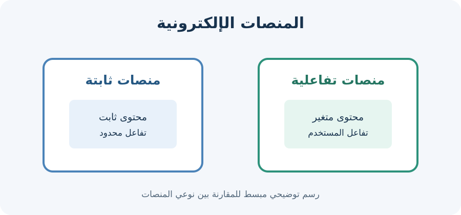

اسم الطالب: اكتبي اسمك هنا
الرقم الجامعي: اكتبي رقمك الجامعي هنا
شهد العالم في السنوات الأخيرة تطوراً كبيراً في مجال الإنترنت والتكنولوجيا، وأصبحت تطبيقات الإنترنت والمنصات الإلكترونية جزءاً مهماً من حياتنا اليومية. فهي تساعد على التواصل وتبادل المعلومات والتعلم والعمل والتسوق بسهولة وسرعة.
تُعد تطبيقات الإنترنت والمنصات الإلكترونية أدوات رقمية تتيح للمستخدمين تنفيذ العديد من المهام من خلال شبكة الإنترنت. وتنقسم المنصات الإلكترونية إلى أنواع متعددة، منها منصات التواصل الاجتماعي، ومنصات التعليم الإلكتروني، ومنصات التجارة الإلكترونية.
هي صفحات ويب تعرض محتوى ثابتاً غالباً، ويظهر المحتوى نفسه لمعظم الزوار، ولا يتغير عادةً إلا عند تعديل الملفات من قِبل مطور الموقع.
هي منصات تسمح للمستخدم بالتفاعل مع المحتوى، مثل تسجيل الدخول وكتابة التعليقات والبحث وإضافة البيانات. وقد يتغير المحتوى حسب المستخدم أو المعلومات الموجودة في قاعدة البيانات.

| وجه المقارنة | المنصات الثابتة (Static) | المنصات التفاعلية (Dynamic) |
|---|---|---|
| طبيعة المحتوى | محتوى ثابت غالباً | محتوى قابل للتغيير والتفاعل |
| تفاعل المستخدم | محدود | متعدد مثل التعليقات وتسجيل الدخول |
| أمثلة | صفحة تعريفية بسيطة | منصات التعليم والتواصل الاجتماعي |